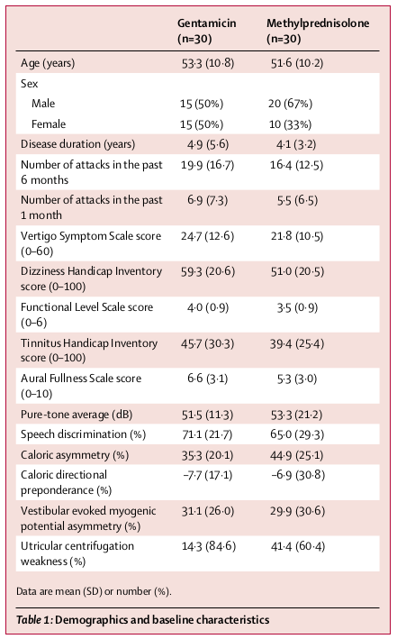
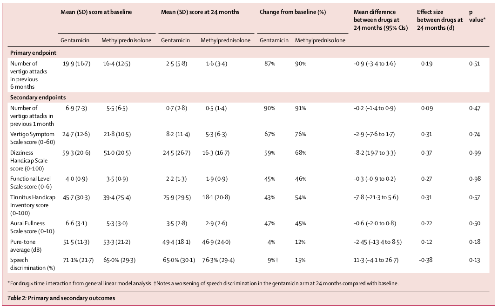

|

../../cm-ucl/corpus-oa-pmr-v02/10.1016_S0140-6736(16)31461-1/tables/table1/table.png
|
| _{Sex} _{Male} _{Female} _{Diseaseduration(years)} _{Numberofattacksinthepast} _{6months} _{Numberofattacksinthepast} 1month VertigoSymptomScalescore (0–60) DizzinessHandicapInventory score(0–100) FunctionalLevelScalescore (0–6) TinnitusHandicapInventory score(0–100) AuralFullnessScalescore (0–10) Pure-toneaverage(dB) Speechdiscrimination(%) Caloricasymmetry(%) Caloricdirectional preponderance(%) Vestibularevokedmyogenic potentialasymmetry(%) Utricularcentrifugation weakness(%) Dataaremean(SD)ornumber(%). |
15(50%) 15(50%) 4·9(5·6) 19·9(16·7) 6·9(7·3) 24·7(12·6) 59·3(20·6) 4·0(0·9) 45·7(30·3) 6·6(3·1) 51·5(11·3) 71·1(21·7) 35·3(20·1) –7·7(17·1) 31·1(26·0) 14·3(84·6) |
20(67%) 10(33%) 4·1(3·2) 16·4(12·5) 5·5(6·5) 21·8(10·5) 51·0(20·5) 3·5(0·9) 39·4(25·4) 5·3(3·0) 53·3(21·2) 65·0(29·3) 44·9(25·1) –6·9(30·8) 29·9(30·6) 41·4(60·4) |
| Table1:Demographicsandbaselinecharacteristics |
../../cm-ucl/corpus-oa-pmr-v02/10.1016_S0140-6736(16)31461-1/tables/table1/table.svg.html
|
|

../../cm-ucl/corpus-oa-pmr-v02/10.1016_S0140-6736(16)31461-1/tables/table2/table.png
|
| Table2:Primaryandsecondaryoutcomes |
../../cm-ucl/corpus-oa-pmr-v02/10.1016_S0140-6736(16)31461-1/tables/table2/table.svg.html
|